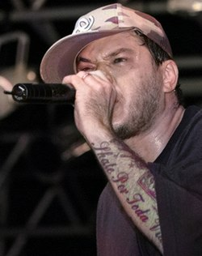

O compositor Brasileiro Chorão continua vivo em nós!
Homenagens

- A prefeitura da cidade de Santos decretou luto oficial de três dias pela morte do cantor. No dia 07 de março de 2013, a câmara de vereadores da cidade prestou uma homenagem ao vocalista em uma sessão que contou com "um minuto de silêncio" e com a presença do filho de Chorão.
No dia de sua morte, a MTV Brasil prestou homenagem ao vocalista com uma programação especial, dedicando sua grade ao líder do Charlie Brown Jr..
- Alguns programas de televisão fizeram homenagens ao músico, como Pânico na Band, Caldeirão do Huck, Altas Horas, Ensaio, TV Xuxa, Mais Você, dentre outros.
- Fãs da banda prestaram homenagens através de cartazes e mensagens escritas na pista de skate criada pelo cantor, além de mensagens nas redes sociais. No dia de sua morte, menções ao vocalista na rede social Twitter dominavam a lista de tópicos mais comentados em todo o mundo.
- O cantor sertanejo Lucas Lucco homenageou Chorão através de uma música, intitulada “Ninguém podia prever”.